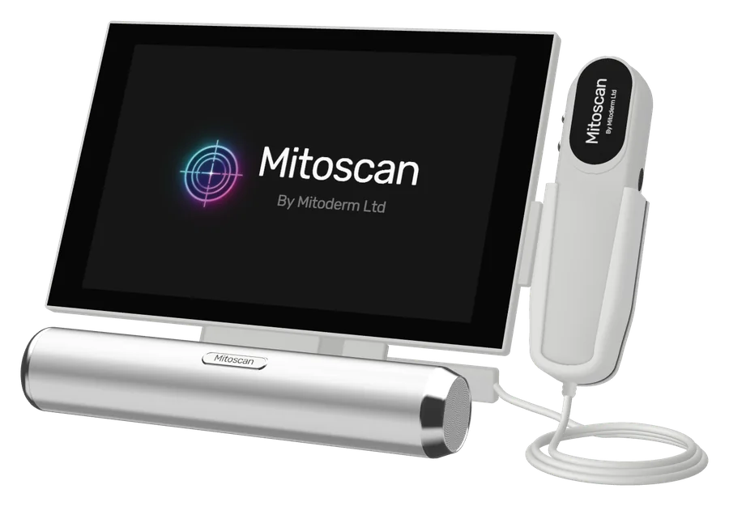
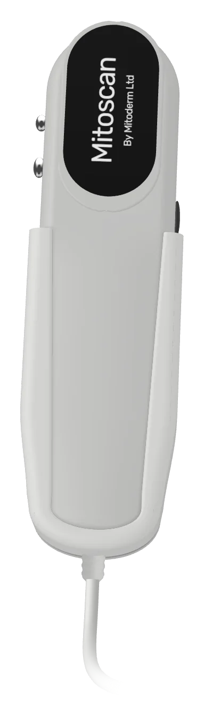
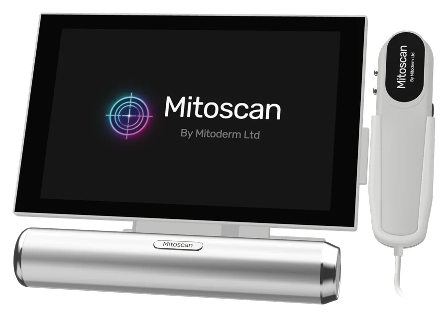
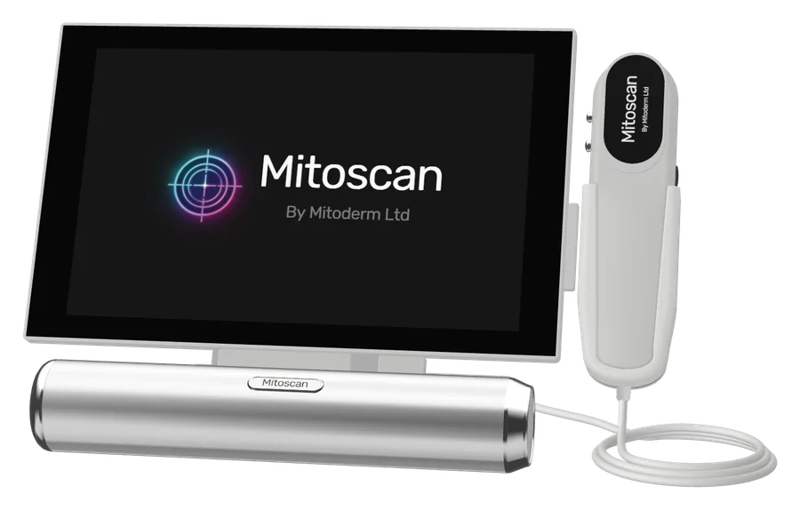
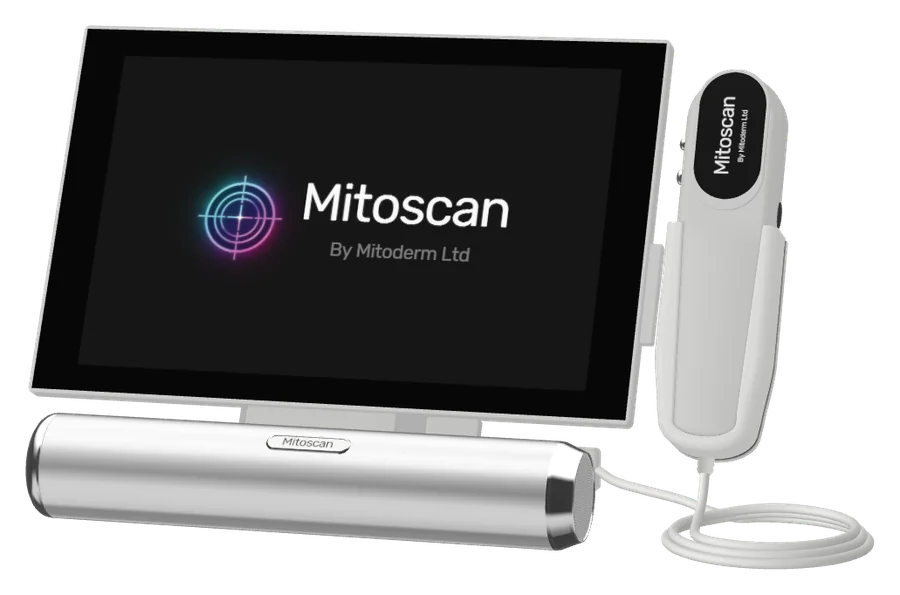

מכשורמקצועי
מכשור מקצועי לקליניקה
MITOSCAN
Measure what matters

מערכת אבחון שיער וקרקפת בהגדלה ×50 ו-×200 – הדמיית HD המאפשרת לראות צפיפות, מספר זקיקים וקוטר שערה לאורך זמן.
- ×50 / ×200
- הדמיית HD
- מעקב לפני / אחרי
- מקצועית
למה?
התרשמות אינה תוכנית.

בעין בלתי מזוינת, צפיפות השיער, מספר הזקיקים וקוטר השערה נשארים סמויים – כך שהמטרות וסדרת הטיפולים נשענות על התרשמות בלבד.
אינדיקציות
- צפיפות שיער
- מספר זקיקים
- קוטר שערה
- מצב הקרקפת
מה בפנים
×50. ×200. על המסך.

הדמיה באיכות HD בהגדלה ×50 ו-×200 חושפת פרטים שאינם נראים בעין: צפיפות שיער, מספר זקיקים, קוטר שערה ומצב הקרקפת.
מפרט טכני
- ×50
- ×200
- הדמיית HD
- מעקב עקבי אחר האזור
הרגישו
גם המטופל/ת רואה את זה.

הנתונים מוצגים על המסך כבר מהביקור הראשון – נקודת פתיחה ברורה, מטרות ריאליות ותוכנית טיפול מותאמת אישית שהמטופל/ת מבין/ה.
- נקודת פתיחה ברורה
- הנתונים על המסך
- מטרות ריאליות
- התקדמות מתועדת
פרוטוקול
סריקה. הסבר. מעקב.

צלמו אזורים ספציפיים בהגדלה ×50 ו-×200, הציגו את הנתונים על המסך בפגישת האבחון הראשונה והשוו את אותם אזורים לאורך סדרת הטיפולים.
משתלבת עם EXOSIGNAL HAIR · EXOSIGNAL SPRAY · MITOPEN
- 01
סריקה ב-×50 / ×200
- 02
הסבר על המסך
- 03
מעקב לאורך הסדרה
הצעה
הכניסו את MITOSCAN לקליניקה שלכם
לשימוש מקצועי בלבד. המומחה שלנו ייעץ לכם בנושאי הדרכה ותמחור.
מצאו מומחה
מומחי MITODERM מוסמכים
פרוטוקול V-TECH, פילינג EXO-NAD ומסכת EXOCELL מבוצעים על ידי איש מקצוע.
מקצוע
עדיין אין מומחים מוסמכים בקטגוריה זו – ראו את הרשימה המלאה.
רשימת קוסמטיקאיות וקליניקות מוסמכות
אתם קוסמטיקאים?הגשת בקשה